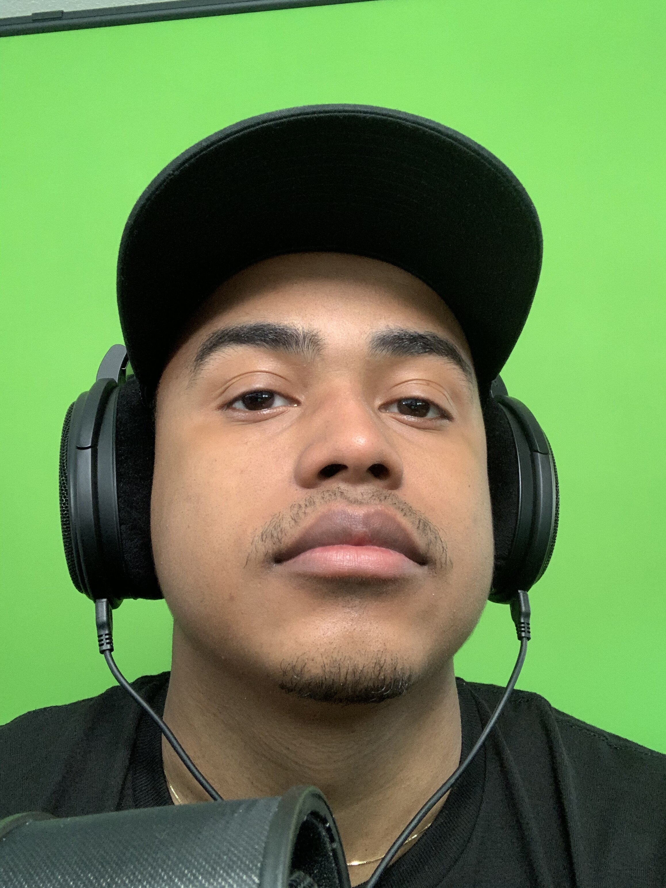

Justin

Contact Me
Summary
Successful Customer Success/IT professional with 6+ years of customer facing experience and 2+ years of
dedicated IT
experience. Looking to progress further into the field of Information Technology. Excellent communication skills
and an
unrivaled attention to detail; motivated, ambitious and effective in managing multiple tasks efficiently and
delivering
exceptional results.
Certifications
CompTIA A+ ce Certification
Experience
IT Support Specialist
MedLearn Media - St. Paul, MN
March 2022 to May 2023
-
Provided company software support for all managed Healthcare accounts in the Northwestern United States
including Alaska.
-
Investigated and responded to support requests via email, phone and software chat function.
- Provided training to end-users across a multitude of departments, resulting in a 93% end-user satisfaction
rate.
- Updated IT support documentation and user guides, leading to an 8% decrease in support tickets.
-
Established beneficial relationships with all clients and kept accurate and detailed descriptions of
services
performed.
Help Desk Tier I
Enjoy Technology - San Diego, CA
September 2019 to June 2020
-
Provided Tier I level of support in a high-volume capacity, handling over 150 calls per day within a small
team.
-
Advised users on methods and actions to resolve and avoid future issues, while providing necessary
documentation as needed.
-
Escalated priority support issues to senior staff by collecting and forwarding all relevant information
prior to
escalation.
-
Troubleshooted basic networking issues, including wireless and remote connectivity problems.
-
Provided an exceptional, personalized customer service experience tailored to each individual customer.
Skills
-
Proficient with NetSuite, MacOS, Windows, Microsoft 365, Apple Suite, Google Workspace and VirtualBox.
-
Build and upgrade PC setups, configure personal LANs and VLANs.
-
Goal driven, customer service, communication, critical thinking and problem solving.
Education
Southern New Hampshire University - Manchester, NH
Bachelor of Science in Computer Science: 2023 - Present